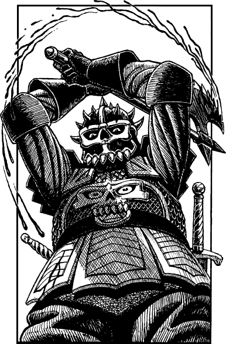

148
Both you and the Lencian officer, whose name is Captain Prarg, ride back and forth, rallying the few soldiers left to support the hard-pressed knights locked in battle at the bridge. A motley company of crossbowmen, halberdiers, wounded men-at-arms, wagon drivers, cooks, heralds, and battle-shocked pikemen are finally assembled, and they march forward with their shields raised and their weapons poised.
On your left, the Prince’s reserves respond to a signal from the hill and advance to support their leader. On your right, massed ranks of Lencian spearmen are locked in pitched combat the length of the orchard wall. As you near the bridge you encounter the bodies of those slain by the crackling rays of electric fire. The sight of their tortured forms, weapons fused in their lifeless hands, sends a wave of shock through your company. ‘Forward, men!’ shouts Captain Prarg. ‘Raise your eyes and advance!’
The bridge looms out of the battle-smoke ahead and your men surge towards the macabre struggle taking place. The bodies of the dead lie six deep, covering the whole area of the approach and filling the ditch on either side. War-cries roar with harsh anger and the air is alive with the clangour of striking steel and the howl of violent death.

‘Charge!’ you shout, and the company pours across the bridge. Reinforced by fresh troops, the knights finally break through the barricade and into the streets beyond. The struggle grows ever more intense as the Drakkarim defenders throw themselves into the fray with total disregard for their lives. One such defender, an élite Drakkarim Death Knight, hacks his way through the leading pikemen and slays your horse with one terrible blow of his two-handed axe. As you fall, he draws back his weapon, its razor-sharp blade trailing scarlet spray, and prepares to strike at your neck.
Death Knight: COMBAT SKILL 24 ENDURANCE 40
Owing to his state of battle-frenzy, your enemy is immune to Mindblast (but not Psi-surge).
If you win the combat turn to 206.